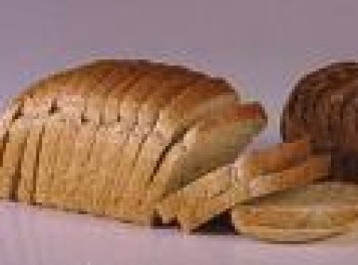
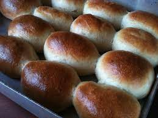
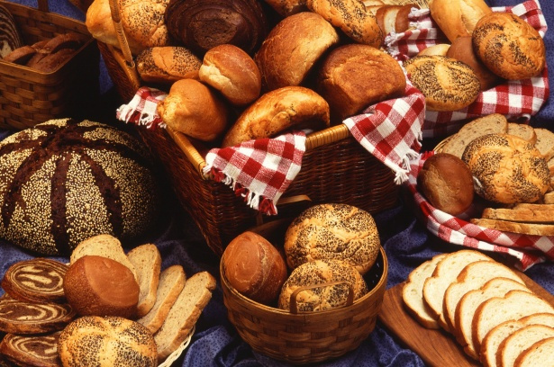

Padaria do seu ze
estilos de pãoes
Pão francês, pão de sal, pão cacetinho ou pão careca são alguns nomes dos pães pequenos, produzidos no Brasil e geralmente consumidos em refeições como o café da manhã e o lanche da tarde



Qual sao Ingredientes principais e suas funções
Farinha de trigo: é o ingrediente básico na formulação. Tem a função de fornecer as proteínas formadoras do glúten, além de outras proteínas. O glúten (complexo protéico) é formado quando a farinha de trigo, a água e os demais ingredientes são misturados e sofrem uma ação mecânica (amassamento). O glúten dá elasticidade e consistência à massa, retém o gás carbônico (CO2) oriundo da fermentação e faz com que haja um aumento do volume do pão.
Clique Abaixo Para Ver mais pãoes